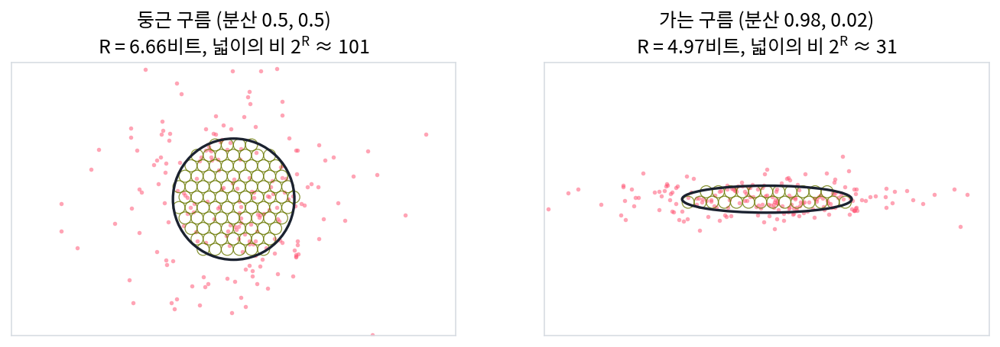

코딩 레이트와 코딩 레이트 감소: 클러스터별로 적으면 짧아진다
이 장의 물음
정확히 되살리지 않아도 될 때는 허용한 왜곡 안에서 필요한 가장 적은 비트를 따질 수 있다. 레이트–디스토션의 생각이다. 거기에 라벨까지 있으면, 무엇을 버리고 무엇을 남길지를 라벨이 정하게 할 수도 있다. 그런데 이 셈은 자료를 낸 분포를 알 때의 이야기다. 손에 쥔 것이 점 몇백 개뿐이고, 그 점들이 평면이나 직선 근처에 납작하게 몰려 있다면 분포의 엔트로피나 상호정보량은 어떻게 셀까?
분류 신경망을 학습시킨 뒤 마지막 층 특징을 2차원으로 줄여 그려 본 사람은 익숙한 그림을 안다. 같은 라벨의 점들이 한 덩어리로 모이고 덩어리끼리는 떨어져 있다. 「잘 배운 표현」이라고 할 때 떠올리는 그림이다. 그런데 「잘 모였다」「잘 떨어졌다」는 아직 눈으로 하는 말이다. 모인 정도와 떨어진 정도를 비트로 잴 수 있을까?
- 점 구름 하나를 허용 오차 안에서 적는 비트를 샘플만 보고 셀 수 있을까? 같은 만큼 퍼진 구름이라도 둥근지 가는지에 따라 비트가 달라질까?
- 점들이 몇 개의 클러스터(같은 라벨이나 같은 직선처럼 한데 묶이는 점들의 모음, cluster)로 되어 있음을 알면, 클러스터별로 따로 적어서 얼마나 아낄까? 클러스터를 잘못 나누면 어떻게 될까?
- 클러스터를 모를 때, 가장 짧게 적히는 나누기를 찾으면 그것이 바른 클러스터일까?
- 신경망이 점을 어디에 둘지 고를 수 있다면, 비트로 보아 좋은 자리는 어디일까?
코딩 레이트: 점 구름을 허용 오차 안에서 적는 비트
지도 앱에 찍힌 위치는 위도와 경도 두 수다. 친구에게 위치를 알릴 때 소수점 아래 열 자리까지 부르는 사람은 없고, 몇 미터 안이면 충분하다. 이렇게 허용 오차를 정하면 적어야 할 비트가 유한해진다. 문장 임베딩이나 그림 특징처럼 신경망이 내놓는 벡터도 마찬가지다. 점 몇백 개가 공간 어딘가에 흩어져 있을 때, 점 하나를 허용 오차 안에서 적으려면 평균 몇 비트가 들까? 그리고 그 비트는 점들이 얼마나 퍼졌는지만 보고 정해질까, 아니면 퍼진 모양도 따질까?
수 하나에서 점 구름까지
가장 작은 경우부터 보자. 수 하나가 0 둘레에 표준편차 7쯤으로 퍼져 있고, 받는 쪽은 1 안쪽의 오차만 허용한다고 하자. 폭 1짜리 칸을 늘어놓으면 퍼진 폭 안에 칸이 7개쯤 들어가니, 어느 칸인지 알리는 데 log₂ 7 = 2.807비트쯤 든다. 퍼짐이 클수록, 허용 오차가 작을수록 칸이 많아지고 비트가 는다.
그런데 log₂(퍼짐 ÷ 허용 오차)를 그대로 쓰면 곤란한 곳이 있다. 퍼짐이 7인데 허용 오차를 14로 넉넉히 주면 log₂(7/14) = −1비트가 된다. 적을 것이 거의 없다는 뜻이어야 하는데 음수가 나온다. 정보기하학의 정규분포 엔트로피 ½ ln(2πeσ²)도 σ가 작으면 음수가 되는데, 같은 까닭이다. 퍼짐의 로그만으로는 기준이 되는 눈금이 없다. 그래서 허용 오차를 눈금으로 삼고 1을 더해 둔다.
- 퍼짐 7, 허용 오차 1: ½ log₂(1 + 7²/1²) = 2.822비트 (칸 세기 2.807과 거의 같다)
- 퍼짐 7, 허용 오차 7: 0.500비트
- 퍼짐 7, 허용 오차 14: 0.161비트 (음수가 되지 않는다)
이제 평면으로 가자. 점 200개로 된 구름 둘을 만들었다. 두 구름 모두 x 방향 분산과 y 방향 분산을 더하면 1이다. 둥근 구름은 두 방향 모두 0.5이고, 가는 구름은 0.98과 0.02다. 허용 오차를 0.1로 하면 점 하나를 적는 데 둥근 구름은 6.658비트, 가는 구름은 4.972비트가 든다(계산은 sources/rate-reduction/s1_rate.py). 둥근 구름은 두 방향이 3.329비트씩을 내고, 가는 구름은 긴 방향이 3.811비트, 짧은 방향이 1.161비트를 낸다. 짧은 방향의 퍼짐은 허용 오차와 크기가 비슷해서 그 방향으로는 거의 적을 것이 없다. 퍼짐의 합이 같아도 납작한 구름은 적게 든다.
이 비트는 공을 세어서도 얻을 수 있다. 점들이 차지한 영역을 타원으로 보고, 그 안을 허용 오차 크기의 작은 공으로 채운다. 점 하나를 적는다는 것은 그 점이 몇 번째 공에 들어 있는지를 알리는 일이다. 공이 N개면 log₂ N비트다. 타원의 넓이를 공 하나의 넓이로 나누면 둥근 구름은 101, 가는 구름은 31이고, log₂ 101 = 6.658, log₂ 31 = 4.972다.

점 n개를 열로 늘어놓은 d × n 행렬을 Z라 하자(뒤에서는 신경망이 만든 표현을 Z로 쓴다). 점들의 평균은 원점이라고 둔다. 점 하나의 제곱 오차를 모든 좌표에 걸쳐 더한 값이 ε²을 넘지 않게 적을 때, 점 하나에 드는 평균 비트를 코딩 레이트 (점 하나를 허용 오차 안에서 적는 평균 비트, coding rate)이라 한다. 점들이 가우스 분포에서 왔다고 보면 다음 식이 된다.
둘째 등호는 행렬식이 고윳값의 곱이라는 데서 나온다. 주축마다 수 하나를 적는 비트 ½ log₂(1 + 퍼짐²/눈금²)를 더한 것이다. 좌표 하나에 허용하는 제곱 오차가 ε²/d이므로 분자에 d가 붙는다. 첫째 꼴의 행렬식 det(I + …)은 공 세기의 넓이 비(3차원이면 부피 비)의 제곱이다. 행렬식이 넓이와 부피의 배율이라는 것을 떠올리면, R은 「점들이 퍼진 부피를 허용 오차 공의 부피로 잰 값의 로그」다. 퍼진 부피는 같아도, 어느 방향의 퍼짐이 ε보다 작으면 그 방향은 거의 0비트를 낸다.
ML에서: 방향 수를 부드럽게 세기
행렬의 랭크는 점들이 실제로 쓰는 방향의 수다. 그런데 랭크는 계단처럼 뛰는 값이라 미분할 수 없고, 아주 작은 노이즈 하나만 섞여도 꽉 찬 값으로 바뀐다. 파젤(Maryam Fazel)·힌디(Haitham Hindi)·보이드(Stephen Boyd)는 2003년 미국 제어 학회(American Control Conference)에 낸 「Log-det heuristic for matrix rank minimization」에서 랭크 대신 log det을 줄이는 방법을 내놓았다. 코딩 레이트의 식을 보면 왜 그런지 보인다. 퍼짐이 ε보다 훨씬 큰 방향은 log만큼 세고, ε보다 훨씬 작은 방향은 거의 세지 않는다. 그래서 R은 「ε 눈금으로 센 방향 수」의 매끄러운 판이고, 신경망의 표현이 몇 방향을 쓰는지를 미분할 수 있는 양으로 잰다. 표현이 한 점으로 무너졌는지 이 양으로 알아볼 수 있는지는 아래 문제 3에서 따져 본다.
문제 1. 공원과 산책로
가로세로 120 m인 네모난 공원 안의 위치와, 그 공원을 가로지르는 폭 2 m·길이 120 m 산책로 위의 위치를 1 m × 1 m 칸 번호로 알린다. (가) 각각 몇 비트가 드는가? (나) 칸을 0.5 m로 줄이면 각각 몇 비트가 느는가? (다) 칸을 4 m로 키우면 어떻게 되는가?

공원은 120 × 120 = 14,400칸이니까 log₂ 14,400 = 13.814비트, 산책로는 120 × 2 = 240칸이라 7.907비트예요.

민준 학생, 칸을 0.5 m로 줄이면 두 곳이 같은 비트만큼 늘까요?
공원은 240 × 240칸이라 15.814비트, 2비트 늘어요. 산책로는 칸이 4분의 1로 작아졌으니까 이것도 2비트겠죠.

산책로는 길이 방향으로 240칸, 폭 방향으로 4칸이니까 960칸이야. 9.907비트라 역시 2비트 늘어. 그런데 (다)에서 칸을 4 m로 키우면 이상해져. 공원은 30 × 30칸이라 9.814비트인데, 산책로는 폭 2 m가 칸 하나보다 좁아.

폭 방향으로 반 칸이니까… 0.5칸이면 log₂ 0.5 = −1비트를 더해야 하나요?

민준 학생, 칸 하나에 다 들어가는 방향에서 「반 칸」을 알릴 일이 있을까요? 어느 칸인지 물으면 답은 늘 하나예요.

아, 그 방향은 0비트예요. 길이 방향 30칸만 남아서 4.907비트요. 폭이 칸보다 좁아지면 산책로는 사실상 선이 되는 거네요.

그래서 코딩 레이트 식에 1을 더해 두는 거구나. ½ log₂(1 + 퍼짐²/눈금²)은 퍼짐이 눈금보다 훨씬 작으면 0으로 가지, 음수로는 안 가. 칸이 작을 때는 공원과 산책로가 둘 다 두 방향을 적고, 칸이 커지면 산책로는 한 방향만 적어.

과제 채점을 10점 단위로만 하면, 다들 3점 안쪽으로 몰린 문제는 점수 칸 하나에 다 들어가서 적을 게 없어지잖아요. 10점 단위가 칸 크기, 3점 퍼짐이 산책로 폭이에요.
문제 2. 허용 오차를 반으로 줄이면
3차원 점 구름의 λ(2차 모멘트 행렬 1/n · ZZᵀ의 고윳값)가 1, 0.25, 0.0001이다. (가) ε = 1과 ε = 0.5에서 R을 구하고, ε를 반으로 줄일 때 늘어난 비트를 구하라. (나) ε = 0.125 → 0.0625, ε = 0.0039 → 0.00195로 반씩 줄일 때는 몇 비트가 느는가? (다) 늘어난 비트로 무엇을 알 수 있는가?
식에 넣으면 ε = 1에서 방향별로 1, 0.404, 0.0002비트라 R = 1.404, ε = 0.5에서 1.850, 1, 0.0009비트라 2.851이에요. 0.876비트 늘었어요.
민준 학생, 눈금을 더 작은 곳에서 반으로 줄여도 늘어나는 비트가 같을까요? (나)로 확인해 봐요.
0.125에서 0.0625로는 2.026비트, 0.0039에서 0.00195로는 2.973비트가 늘어요. 눈금을 똑같이 반으로 줄였는데 느는 비트가 0.876, 2.026, 2.973으로 달라요.
방향 하나만 보면 ½ log₂(1 + 3λ/ε²)이고, 3λ/ε²가 1보다 훨씬 크면 1을 무시할 수 있어. 그러면 ε를 반으로 줄일 때 ½ log₂ 4 = 1비트가 늘어. 1보다 훨씬 작으면 거의 안 늘고.

그러니까 늘어난 비트는 「퍼짐이 눈금보다 큰 방향의 수」야. 처음 0.876은 두 방향이 아직 덜 드러난 것, 2.026은 두 방향, 2.973은 셋째 방향까지 눈금보다 커진 거고. 그런데 그러면 이 구름은 2차원이야, 3차원이야?
서연 학생, 둘 다 맞는 답이 될 수 있어요. 셋째 방향의 퍼짐은 √0.0001 = 0.01이에요. 그보다 큰 오차를 허용하면 이 구름은 평면처럼 적히고, 더 작은 오차를 요구하면 입체로 적혀요. 「몇 차원인가」에 답하려면 먼저 무엇을 물어야 하죠?

어느 눈금으로 보느냐요. 내재 차원도 허용 오차를 정해야 정해지는 거네요. 눈금을 바꿔 가며 비트가 느는 속도를 보면, 그 눈금에서 자료가 쓰는 방향 수가 나와요.
지도 앱에서 확대하면 길이 선에서 폭이 있는 띠로 바뀌는 거랑 같아요. 몇 차원인지는 확대 배율이 정하네요.
문제 3. 한 점으로 무너진 임베딩
길이 1로 맞춘 64차원 임베딩 256개의 R을 ε = 0.5로 쟀다. (가) 고르게 퍼진 임베딩, (나) 모두 한 방향 근처에 모인 임베딩(노이즈 0.01), (다) 네 방향 근처에 나뉘어 모인 임베딩(노이즈 0.01)의 R은 각각 70.644, 5.122, 13.042비트였다. 어림셈으로 이 크기를 설명하라. 자기 지도 학습(라벨 없이, 한 그림을 두 가지로 바꾼 것끼리 표현이 가깝게 되도록 배우는 학습)에서 임베딩 묶음의 R을 어떻게 쓸 수 있는가?
(나)는 한 점에 다 모였으니까 적을 게 없어서 0비트여야 하는데, 5.122비트나 나왔어요. 노이즈 때문인가요?
한 점이라도 그 점이 원점이 아니면요? 코딩 레이트는 원점을 중심으로 퍼짐을 재요. 모두 길이 1인 점이 한 방향에 모여 있으면, 그 방향의 λ는 얼마죠?
1이에요. 그러면 ½ log₂(1 + 64 × 1/0.25) = 4.003비트가 그 방향에서 나오고, 나머지 63방향은 노이즈가 조금씩 내서 5.122가 된 거네요.
(다)는 네 방향에 64개씩이면 방향마다 λ가 1/4쯤이야. 4 × ½ log₂(1 + 64 × 0.25/0.25) = 12.045비트, 실제 13.042와 가까워. (가)는 64방향에 고르게 1/64씩이니까 64 × ½ log₂(1 + 1/0.25) = 74.302비트.
그런데 (가)는 실제로 70.644라 어림보다 작아. 고윳값이 0.033부터 아주 작은 값까지 흩어져 있으니까, 점 256개로는 64방향이 똑같이 퍼지지 않는구나.
그래요. 자기 지도 학습에서 두 장면을 서로 가깝게 만드는 것만 목표로 하면, 모든 임베딩을 한 점으로 보내는 쉬운 답이 생겨요. 그 답의 R은 어떤가요?

5비트쯤으로 확 떨어져요. 그러면 묶음 하나의 R을 손실에서 빼 두면, 임베딩을 한 점으로 모으는 해는 손해가 되네요. 무너졌는지 알아보는 경보이자 막는 항이 될 수 있어요.
조별 보고서 넷이 서로 베껴서 다 똑같으면 넷을 적을 필요 없이 하나만 적으면 되잖아요. R이 낮다는 건 그런 거네요.